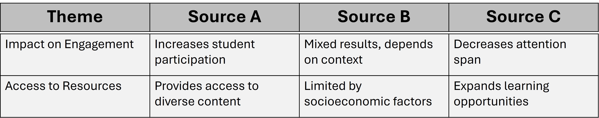

Advanced Reading Strategies for Academic Texts
Purpose of Academic Reading
Deep Understanding:
Academic reading goes beyond just understanding the surface meaning; it requires critical engagement with the text.
Critical Analysis:
Identify the author's argument, evidence, and assumptions, and assess their validity.
Application:
Apply the knowledge gained from academic texts to your own research or studies.
Types of Academic Texts
Journal Articles:
Peer-reviewed articles that present original research, reviews, or theoretical discussions.
Books and Textbooks:
Comprehensive coverage of topics, often providing in-depth background information and context.
Conference Papers:
Papers presented at academic conferences, often discussing cutting-edge research.
Reports and Case Studies:
Detailed analysis of specific cases, often used in applied fields such as business, education, or medicine.
Skimming Techniques
Skimming:
Quickly read through a text to get a general idea of its content.
How to Skim:
Focus on headings, subheadings, abstracts, and the first and last sentences of paragraphs.
When to Use:
Use skimming when you need a broad overview or are deciding whether a text is relevant to your research.
Scanning Techniques
Scanning:
Look for specific information or keywords within a text.
How to Scan:
Search for specific terms, phrases, or data points that are relevant to your research question.
When to Use:
Use scanning when you know exactly what information you need, such as finding a particular statistic or reference.
Critical Reading Techniques
Question the Text:
Ask questions about the author’s purpose, the evidence presented, and the conclusions drawn.
Identify Key Arguments:
Focus on the main arguments and supporting evidence presented in the text.
Evaluate Evidence:
Assess the quality and relevance of the evidence used to support the author’s claims.
Examples
Example Questions:
What is the author’s main argument? What assumptions are being made? Is the evidence convincing?
Identify Key Arguments - Example:
The author argues that climate change is exacerbating social inequalities by disproportionately affecting marginalized communities.
Evaluate Evidence - Example:
Is the evidence based on recent research? Are the sources credible and reliable?
Annotation Techniques
Highlighting and Underlining:
Use highlighting to mark important points, and underlining to emphasize key terms or concepts.
Tip:
Use different colors for different types of information (e.g., arguments, evidence, counterarguments).
Margin Notes:
Write brief notes or questions in the margins to capture your thoughts and reactions as you read.
Example:
What does the author mean by 'sustainable development'? Look up definition.
Summarizing Sections:
At the end of each section or chapter, write a brief summary in your own words.
Example:
This section discusses the impact of global trade policies on developing economies, arguing that they often benefit wealthy nations at the expense of poorer ones.
Synthesizing Information from Multiple Sources
Building a Comprehensive Understanding:
Synthesis involves combining information from multiple sources to form a well-rounded understanding of a topic.
Identifying Patterns and Themes:
Look for common themes, patterns, or contradictions across different texts.
Supporting Your Argument:
Synthesis allows you to draw on a wide range of evidence to support your own research or arguments.
Steps for Effective Synthesis
Identify Relevant Sources:
Choose texts that address different aspects of your research question or topic.
Example:
If researching the impact of technology on education, select articles that discuss both the benefits and challenges.
Compare and Contrast:
Identify similarities and differences in the arguments, evidence, and conclusions presented in each source.
Example:
Author A argues that technology enhances student engagement, while Author B highlights the potential for distraction.
Integrate Ideas:
Combine the insights from different sources to create a coherent understanding or argument.
Example:
While technology can both enhance and hinder learning, its impact depends largely on how it is implemented in the classroom.
Create a Synthesis Matrix:
Use a synthesis matrix to organize information from different sources by themes or key points.

Practice Exercise
Create a Synthesis Matrix:
Select three sources related to your research topic and create a synthesis matrix to organize and compare the information.
Next Class: ☛ Purpose of a Literature Review